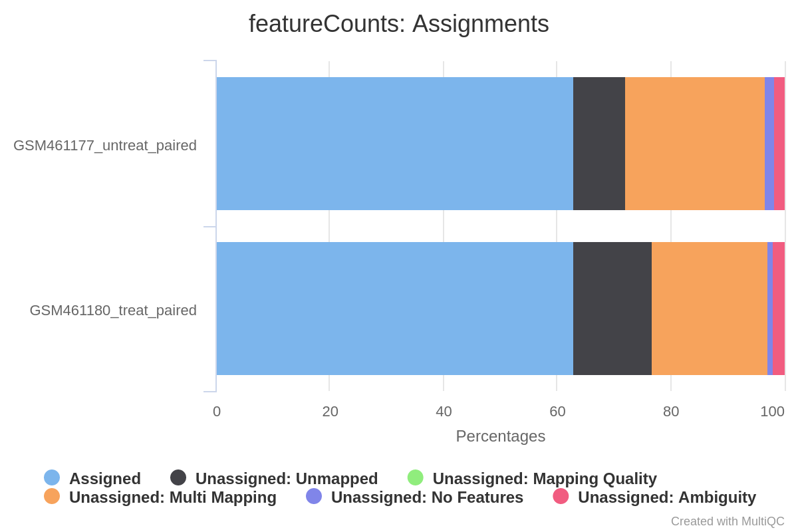

In recent years, RNA sequencing (in short RNA-Seq) has become a very widely used technology to analyze the continuously changing cellular transcriptome, i.e. the set of all RNA molecules in one cell or a population of cells. One of the most common aims of RNA-Seq is the profiling of gene expression by identifying genes or molecular pathways that are differentially expressed (DE) between two or more biological conditions. This tutorial demonstrates a computational workflow for the detection of DE genes and pathways from RNA-Seq data by providing a complete analysis of an RNA-Seq experiment profiling Drosophila cells after the depletion of a regulatory gene.
In the study of Brooks et al. 2011, the authors identified genes and pathways regulated by the Pasilla gene (the Drosophila homologue of the mammalian splicing regulators Nova-1 and Nova-2 proteins) using RNA-Seq data. They depleted the Pasilla (PS) gene in Drosophila melanogaster by RNA interference (RNAi). Total RNA was then isolated and used to prepare both single-end and paired-end RNA-Seq libraries for treated (PS depleted) and untreated samples. These libraries were sequenced to obtain RNA-Seq reads for each sample. The RNA-Seq data for the treated and the untreated samples can be compared to identify the effects of Pasilla gene depletion on gene expression.
In this tutorial, we illustrate the analysis of the gene expression data step by step using 7 of the original datasets:
Each sample constitutes a separate biological replicate of the corresponding condition (treated or untreated). Moreover, two of the treated and two of the untreated samples are from a paired-end sequencing assay, while the remaining samples are from a single-end sequencing experiment.
comment Full data
The original data are available at NCBI Gene Expression Omnibus (GEO) under accession number GSE18508. The raw RNA-Seq reads have been extracted from the Sequence Read Archive (SRA) files and converted into FASTQ files.
In the first part of this tutorial we will use the files for 2 out of the 7 samples to demonstrate how to calculate read counts (a measure of the gene expression) from FASTQ files (quality control, mapping, read counting). We provide the FASTQ files for the other 5 samples if you want to reproduce the whole analysis later.
In the second part of the tutorial, read counts of all 7 samples are used to identify and visualize the DE genes, gene families and molecular pathways due to the depletion of the PS gene.
hands_on Hands-on: Data upload
Create a new history for this RNA-Seq exercise
tip Tip: Creating a new history
Click the new-history icon at the top of the history panel
If the new-history is missing:
Click on the galaxy-gear icon (History options) on the top of the history panel
Select the option Create New from the menu
Import the FASTQ file pairs from Zenodo or a data library:
GSM461177 (untreated): GSM461177_1 and GSM461177_2
Open the Galaxy Upload Manager (galaxy-upload on the top-right of the tool panel)
Select Paste/Fetch Data
Paste the link into the text field
Press Start
Close the window
By default, Galaxy uses the URL as the name, so rename the files with a more useful name.
tip Tip: Importing data from a data library
As an alternative to uploading the data from a URL or your computer, the files may also have been made available from a shared data library:
Go into Shared data (top panel) then Data libraries
Find the correct folder (ask your instructor)
Select the desired files
Click on the To History button near the top and select as Datasets from the dropdown menu
In the pop-up window, select the history you want to import the files to (or create a new one)
Click on Import
comment Comment
Note that these are the full files for the samples and ~1.5Gb each so it may take some minutes to import.
For a quicker run-through of the FASTQ steps a small subset of each FASTQ file (~5Mb) can be found here on Zenodo
Rename each dataset according to the sample id (e.g. GSM461177_1)
tip Tip: Renaming a dataset
Click on the galaxy-pencilpencil icon for the dataset to edit its attributes
In the central panel, change the Name field
Click the Save button
Check that the datatype is fastqsanger (e.g. notfastq). If it is not, please change the datatype to fastqsanger.
tip Tip: Changing the datatype
Click on the galaxy-pencilpencil icon for the dataset to edit its attributes
In the central panel, click on the galaxy-chart-select-dataDatatypes tab on the top
Select fastqsanger
Click the Change datatype button
Add to each dataset a tag corresponding to the name of the sample (#GSM461177 or #GSM461180)
tip Tip: Adding a tag
Click on the dataset
Click on galaxy-tagsEdit dataset tags
Add a tag starting with #
Tags starting with # will be automatically propagated to the outputs of tools using this dataset.
Check that the tag is appearing below the dataset name
question Questions
How are the DNA sequences stored?
What are the other entries of the file?
solution Solution
The DNA sequences are stored in a FASTQ file, in the second line of every 4-line group.
This file format is called FASTQ format. It stores sequence information and quality information. Each sequence is represented by a group of 4 lines with the 1st line being the sequence id, the second the sequence of nucleotides, the third a transition line and the last one a sequence of quality score for each nucleotide.
The reads are raw data from the sequencing machine without any pretreatments. They need to be assessed for their quality.
Quality control
During sequencing, errors are introduced, such as incorrect nucleotides being called. These are due to the technical limitations of each sequencing platform. Sequencing errors might bias the analysis and can lead to a misinterpretation of the data. Adapters may also be present if the reads are longer than the fragments sequenced and trimming these may improve the number of reads mapped.
Sequence quality control is therefore an essential first step in your analysis. We will use similar tools as described in the “Quality control” tutorial: FastQC to create a report of sequence quality, MultiQC (Ewels et al. 2016) to aggregate generated reports and Cutadapt (Marcel 2011) to improve the quality of sequences via trimming and filtering.
hands_on Hands-on: Quality control
FastQCtool with the following parameters:
param-files“Short read data from your current history”: input datasets selected with Multiple datasets
tip Tip: Select multiple datasets
Click on param-filesMultiple datasets
Select several files by keeping the Ctrl (or
COMMAND) key pressed and clicking on the files of interest
Inspect the webpage output of FastQCtool for the GSM461177 sample
question Questions
What is the read length?
solution Solution
The read length is 37 bp.
MultiQCtool with the following parameters to aggregate the FastQC reports:
In “Results”
“Which tool was used generate logs?”: FastQC
In “FastQC output”
“Type of FastQC output?”: Raw data
param-files“FastQC output”: Raw data files (output of FastQCtool)
Inspect the webpage output from MultiQC for each FASTQ
question Questions
What do you think of the quality of the sequences?
What should we do?
solution Solution
Everything seems good for 3 of the files. The GSM461177 have 10.3 millions of sequences and GSM461180 12.3 millions of sequences. But in GSM461180_2 (reverse reads of GSM461180) the quality decreases quite a lot at the end of the sequences.
All files except GSM461180_2 have a high proportion of duplicated reads (expected in RNA-Seq data)
Figure 1: Sequence Counts
The “Per base sequence quality” is globally good with a slight decrease at the end of the sequences. For GSM461180_2, the decrease is quite large.
Figure 2: Sequence Quality
The mean quality score over the reads is quite high, but the distribution is slightly different for GSM461180_2
Figure 3: Per Sequence Quality Scores
Reads are not really following a normal distribution of GC content, except GSM461180_2
Figure 4: Per Sequence GC Content
Few N in the reads
Figure 5: Per base N content
Duplicated sequences: >10 to >500
Figure 6: Sequence Duplication Levels
Almost no known adapters and overrepresented sequences
If the quality of the reads is not good, we should:
Check what is wrong and think about it: it may come from the type of sequencing or what we sequenced (high quantity of overrepresented sequences in transcriptomics data, biaised percentage of bases in HiC data)
Ask the sequencing facility about it
Perform some quality treatment (in a reasonable way to not lose too much information) with some trimming or removal of bad reads
We should trim the reads to get rid of bases that were sequenced with high uncertainty (i.e. low quality bases) at the read ends, and also remove the reads of overall bad quality.
question Questions
What is the relation between GSM461177_1 and GSM461177_2 ?
solution Solution
The data has been sequenced using paired-end sequencing.
The paired-end sequencing is based on the idea that the initial DNA fragments (longer than the actual read length) is sequenced from both sides. This approach results in two reads per fragment, with the first read in forward orientation and the second read in reverse-complement orientation. The distance between both reads is known. Thus, it can be used as an additional piece of information to improve the read mapping.
With paired-end sequencing, each fragment is more covered than with single-end sequencing (only forward orientation sequenced):
One file with the sequences corresponding to forward orientation of all the fragments
One file with the sequences corresponding to reverse orientation of all the fragments
Here GSM461177_1 corresponds to the forward reads and GSM461177_2 to the reverse reads.
hands_on Hands-on: Quality control
Cutadapttool with the following parameters to trim low quality sequences:
“Single-end or Paired-end reads?”: Paired-end
param-files“FASTQ/A file #1”: both _1 fastqsanger datasets (multiple datasets)
param-files“FASTQ/A file #2”: both _2 fastqsanger datasets (multiple datasets)
The order is important here!
In “Filter Options”
“Minimum length”: 20
In “Read Modification Options”
“Quality cutoff”: 20
In “Output Options”
“Report”: Yes
question Questions
Why do we run the trimming tool only once on a paired-end dataset and not twice, once for each dataset?
solution Solution
The tool can remove sequences if they become too short during the trimming process. For paired-end files it removes entire sequence pairs if one (or both) of the two reads became shorter than the set length cutoff. Reads of a read-pair that are longer than a given threshold but for which the partner read has become too short can optionally be written out to single-end files. This ensures that the information of a read pair is not lost entirely if only one read is of good quality.
Inspect the generated txt files (Report)
question Questions
How many basepairs has been removed from the forwards reads because of bad quality? And from the reverse reads?
How many sequence pairs have been removed because at least one read was shorter than the length cutoff?
solution Solution
For GSM461177, 5,072,810 bp has been trimmed for the forward reads (read 1) and 8,648,619 bp on the reverse (read 2) because of quality. For GSM461180, 10,224,537 bp on forward and 51,746,850 bp on the reverse. It is not a surprise: we saw that at the end of the reads the quality was dropping more for the reverse reads than for the forward reads, especially for GSM461180.
147,810 (1.4%) reads were too short for GSM461177 and 1,101,875 (9%) for GSM461180.
Mapping
To make sense of the reads, we need to first figure out where the sequences originated from in the genome, so we can then determine to which genes they belong. When a reference genome for the organism is available, this process is known as aligning or “mapping” the reads to the reference. This is equivalent to solving a jigsaw puzzle, but unfortunately, not all pieces are unique.
comment Comment
Do you want to learn more about the principles behind mapping? Follow our training.
In this study, the authors used Drosophila melanogaster cells. We should then map the quality-controlled sequences to the reference genome of Drosophila melanogaster.
question Questions
What is a reference genome?
For each model organism, several possible reference genomes may be available (e.g. hg19 and hg38 for human). What do they correspond to?
Which reference genome should we use?
solution Solution
A reference genome (or reference assembly) is a set of nucleic acid sequences assembled as a representative example of a species’ genetic material. As they are often assembled from the sequencing of different individuals, they do not accurately represent the set of genes of any single organism, but a mosaic of different nucleic acid sequences from each individual.
As the cost of DNA sequencing falls, and new full genome sequencing technologies emerge, more genome sequences continue to be generated. Using these new sequences, new alignments are builts and the reference genomes improved (fewer gaps, fixed misrepresentations in the sequence, etc). The different reference genomes correspond to the different released versions (called “builds”).
The genome of Drosophila melanogaster is known and assembled and it can be used as the reference genome in this analysis. Note that new versions of reference genomes may be released if the assembly improves, for this tutorial we are going to use the release 6 of the Drosophila melanogaster reference genome assembly (dm6).
With eukaryotic transcriptomes most reads originate from processed mRNAs lacking introns:
Figure 7: The types of RNA-seq reads (adaption of the Figure 1a from Kim et al. 2015): reads that mapped entirely within an exon (in red), reads spanning over 2 exons (in blue), read spanning over more than 2 exons (in purple)
Therefore they cannot be simply mapped back to the genome as we normally do for DNA data. Spliced-awared mappers have been developed to efficiently map transcript-derived reads against a reference genome:
Figure 8: Principle of spliced mappers: (1) identification of the reads spanning a single exon, (2) identification of the splicing junctions on the unmapped reads
details More details on the different spliced mappers
Several spliced mappers have been developed over the past years to process the explosion of RNA-Seq data.
TopHat (Trapnell et al. 2009) was one of the first tools designed specifically to address this problem. In TopHatreads are mapped against the genome and are separated into two categories: (1) those that map, and (2) those that are initially unmapped (IUM). “Piles” of reads representing potential exons are extended in search of potential donor/acceptor splice sites and potential splice junctions are reconstructed. IUMs are then mapped to these junctions.
To further optimize and speed up spliced read alignment, HISAT2 (Kim et al. 2019) was developed. It uses a hierarchical graph FM (HGFM) index, representing the entire genome and eventual variants, together with overlapping local indexes (each spanning ~57 kb) that collectively cover the genome and its variants. This allows to find initial seed locations for potential read alignments in the genome using global index and to rapidly refine these alignments using a corresponding local index:
Figure 11: Hierarchical Graph FM index in HISAT/HISAT2 (Figure S8 from Kim et al. 2015)
A part of the read (blue arrow) is first mapped to the genome using the global FM index. HISAT2 then tries to extend the alignment directly utilizing the genome sequence (violet arrow). In (a) it succeeds and this read is aligned as it completely resides within an exon. In (b) the extension hits a mismatch. Now HISAT2 takes advantage of the local FM index overlapping this location to find the appropriate mapping for the remainder of this read (green arrow). The (c) shows a combination these two strategies: the beginning of the read is mapped using global FM index (blue arrow), extended until it reaches the end of the exon (violet arrow), mapped using local FM index (green arrow) and extended again (violet arrow).
STAR aligner (Dobin et al. 2013) is a fast alternative for mappingRNA-Seq reads against a reference genome utilizing an uncompressed suffix array. It operates in two stages. In the first stage it performs a seed search:
Here a read is split between two consecutive exons. STAR starts to look for a maximum mappable prefix (MMP) from the beginning of the read until it can no longer match continuously. After this point it start to look for a MMP for the unmatched portion of the read (a). In the case of mismatches (b) and unalignable regions (c) MMPs serve as anchors from which to extend alignments.
At the second stage STAR stitches MMPs to generate read-level alignments that (contrary to MMPs) can contain mismatches and indels. A scoring scheme is used to evaluate and prioritize stitching combinations and to evaluate reads that map to multiple locations. STAR is extremely fast but requires a substantial amount of RAM to run efficiently.
Mapping
We will map our reads to the Drosophila melanogaster genome using STAR (Dobin et al. 2013).
hands_on Hands-on: Spliced mapping
Import the Ensembl gene annotation for Drosophila melanogaster (Drosophila_melanogaster.BDGP6.87.gtf) from the Shared Data library if available or from Zenodo into your current Galaxy history
Verify that the datatype is gtf and not gff, and that the database is dm6
comment How to get annotation file?
Annotation files from model organisms may be available on the Shared Data library (the path to them will change from one Galaxy server to the other). You could also retrieve the annotation file from UCSC (using UCSC Main tool).
RNA STARtool with the following parameters to map your reads on the reference genome:
“Single-end or paired-end reads”: Paired-end (as individual datasets)
param-files“RNA-Seq FASTQ/FASTA file, forward reads”: the Read 1 Output (outputs of Cutadapttool)
param-files“RNA-Seq FASTQ/FASTA file, reverse reads”: the Read 2 Output (outputs of Cutadapttool)
“Custom or built-in reference genome”: Use a built-in index
“Reference genome with or without an annotation”: use genome reference without builtin gene-model
“Select reference genome”: Fly (Drosophila Melanogaster): dm6 Full
param-file“Gene model (gff3,gtf) file for splice junctions”: the imported Drosophila_melanogaster.BDGP6.87.gtf
“Length of the genomic sequence around annotated junctions”: 36
This parameter should be length of reads - 1
MultiQCtool to aggregate the STAR logs:
In “Results”
“Which tool was used generate logs?”: STAR
In “STAR output”
“Type of STAR output?”: Log
param-files“STAR output”: log files (output of RNA STARtool)
question Question
What percentage of reads mapped exactly once for both samples?
What are the other available statistics?
solution Solution
More than 83% for GSM461177 and more than 79% for GSM461180. We can proceed with the analysis since only percentages below 70% should be investigated for potential contamination.
We also have access to the number and percentage of reads that are mapped at several location, mapped at too many different location, not mapped because too short.
Figure 13: Alignment scores
We could have been probably more strict in the minimal read length to avoid these unmapped reads because of length.
According to the MultiQC report, more than 80% of reads for both samples are mapped exactly once to the reference genome. We can proceed with the analysis since only percentages below 70% should be investigated for potential contamination. Both samples have a low (less than 10%) percentage of reads that mapped to multiple locations on the reference genome. This is in the normal range for Illumina short-read sequencing, but may be lower for newer long-read sequencing datasets that can span larger repeated regions in the reference genome.
The main output of STAR is a BAM file.
A BAM (Binary Alignment Map) file is a compressed binary file storing the read sequences, whether they have been aligned to a reference sequence (e.g. a chromosome), and if so, the position on the reference sequence at which they have been aligned.
hands_on Hands-on: Inspect a BAM/SAM file
Inspect the param-file output of RNA STARtool
A BAM file (or a SAM file, the non-compressed version) consists of:
A header section (the lines starting with @) containing metadata particularly the chromosome names and lengths (lines starting with the @SQ symbol)
An alignment section consisting of a table with 11 mandatory fields, as well as a variable number of optional fields:
Col
Field
Type
Brief Description
1
QNAME
String
Query template NAME
2
FLAG
Integer
Bitwise FLAG
3
RNAME
String
References sequence NAME
4
POS
Integer
1- based leftmost mapping POSition
5
MAPQ
Integer
MAPping Quality
6
CIGAR
String
CIGAR String
7
RNEXT
String
Ref. name of the mate/next read
8
PNEXT
Integer
Position of the mate/next read
9
TLEN
Integer
Observed Template LENgth
10
SEQ
String
Segment SEQuence
11
QUAL
String
ASCII of Phred-scaled base QUALity+33
question Questions
Which information do you find in a SAM/BAM file?
What is the additional information compared to a FASTQ file?
solution Solution
Sequences and quality information, like a FASTQ
Mapping information, Location of the read on the chromosome, Mapping quality, etc
Inspection of the mapping results
The BAM file contains information for all our reads, making it difficult to inspect and explore in text format. A powerful tool to visualize the content of BAM files is the Integrative Genomics Viewer (IGV, Robinson et al. 2011).
Expand the param-filemapped.bam file (output of RNA STARtool) for GSM461177
Click on the local in display with IGV local D. melanogaster (dm6) to load the reads into the IGV browser
comment Comments
In order for this step to work, you will need to have either IGV or Java web start
installed on your machine. However, the questions in this section can also be answered by inspecting the IGV screenshots below.
IGVtool: Zoom to chr4:540,000-560,000 (Chromosome 4 between 540 kb to 560 kb)
question Question
Figure 14: Screenshot of IGV on Chromosome 4
What information appears at the top as grey peaks?
What do the connecting lines between some of the aligned reads indicate?
solution Solution
The coverage plot: the sum of mapped reads at each position
They indicate junction events (or splice sites), i.e.reads that are mapped across an intron
IGVtool: Inspect the splice junctions using a Sashimi plot
comment Creation of a Sashimi plot
Right click on the BAM file (in IGV)
Select Sashimi Plot from the menu
question Question
Figure 15: Screenshot of a Sashimi plot of Chromosome 4
What does the vertical red bar graph represent? And the arcs with numbers?
What do the numbers on the arcs mean?
Why do we observe different stacked groups of blue linked boxes at the bottom?
solution Solution
The coverage for each alignment track is plotted as a red bar graph. Arcs represent observed splice junctions, i.e., reads spanning introns
The numbers refer to the number of observed junction reads.
The different groups of linked boxes on the bottom represent the different transcripts from the genes at this location, that are present in the GTF file.
The quality of the data and mapping can be checked further, e.g. by inspecting read duplication level, number of reads mapped to each chromosome, gene body coverage, and read distribution across features.
In the FastQC report, we saw that some reads are duplicated:
Figure 16: Sequence Duplication Levels
Duplicate reads can come from highly-expressed genes, therefore they are usually kept in RNA-Seq differential expression analysis. But a high percentage of duplicates may indicate an issue, e.g. over amplification during PCA of low complexity library.
MarkDuplicates from Picard suite examines aligned records from a BAM file to locate duplicate reads, i.e. readsmapping to the same location (based on the start position of the mapping).
hands_on Hands-on: Check duplicate reads
MarkDuplicatestool:
param-files“Select SAM/BAM dataset or dataset collection”: mapped.bam files (outputs of RNA STARtool)
MultiQCtool to aggregate the MarkDuplicates logs:
In “Results”
“Which tool was used generate logs?”: Picard
In “Picard output”
“Type of Picard output?”: Markdups
param-files“Picard output”: MarkDuplicate metrics files (output of MarkDuplicatestool)
question Question
What are the percentages of duplicate reads for each sample?
solution Solution
The sample GSM461177 has 27.8% of duplicated reads while GSM461180 has 25.9%.
In general, up to 50% of duplication can be consider normal to obtain. So both our samples are good.
Number of reads mapped to each chromosome
To assess the sample quality (e.g. excess of mitochondrial contamination), check the sex of samples, or see if any chromosome have highly expressed genes, we can check the numbers of reads mapped to each chromosome using IdxStats from the Samtools suite.
hands_on Hands-on: Check the number of reads mapped to each chromosome
Samtools idxstatstool:
param-files“BAM file”: mapped.bam files (outputs of RNA STARtool)
MultiQCtool to aggregate the idxstats logs:
In “Results”
“Which tool was used generate logs?”: idxstats
How many chromosomes does the Drosophila genome have?
Where did the reads mostly map?
Can we determine the sex of the sample?
solution Solution
The genome of Drosophila has 4 pairs of chromosomes: X/Y, 2, 3, and 4.
The reads mapped mostly to chromosome 2 (chr2L and chr2R), 3 (chr3L and chr3R) and X. Only some reads mapped to chromosome 4, which is expected given this chromosome is very small.
From the percentage of X+Y reads, most of the reads map to X and only few to Y. So only few genes may be on Y. So the samples are probably both female.
Gene body coverage
The gene body is the different regions of a gene. It is important to check if reads coverage is uniform over gene body or if there is any 5’/3’ bias. For example, a bias towards the 5’ end of genes could indicate degradation of the RNA. Alternatively, a 3’ bias could indicate that the data is from a 3’ assay. To assess this, we can use the Gene Body Coverage tool from the RSeQC (Wang et al. 2012) tool suite. This tool scales all transcripts to 100 nucleotides (using a provided annotation file) and calculates the number of reads covering each nucleotide position.
hands_on Hands-on: Check gene body coverage
Convert GTF to BED12tool to convert the GTF file to BED:
param-file“GTF File to convert”: Drosophila_melanogaster.BDGP6.87.gtf
Gene Body Coverage (BAM)tool:
“Run each sample separately, or combine mutiple samples into one plot”: Run each sample separately
param-files“Input .bam file”: mapped.bam files (outputs of RNA STARtool)
“Reference gene model”: BED12 file (output Convert GTF to BED12tool)
MultiQCtool to aggregate the idxstats logs:
In “Results”
“Which tool was used generate logs?”: RSeQC
In “RSeQC output”
“Type of RSeQC output?”: gene_body_coverage
param-files“RSeQC gene_body_coverage output”: (text) files (outputs of Gene Body Coverage (BAM)tool)
question Question
How are the coverage across gene bodies? Are the samples biased in 3’ or 5’?
solution Solution
For both samples there is a pretty even coverage from 5’ to 3’ ends (despite some noise in the middle). So no obvious bias in both samples.
Read distribution across features
With RNA-Seq data, we expect most reads to map to exons rather than introns or intergenic regions. Before going further in counting and differential expression analysis, it may be interesting to check the distribution of reads across known gene features (exons, CDS, 5’ UTR, 3’ UTR, introns, intergenic regions). For example, a high number of readsmapping to intergenic regions may indicate the presence of DNA contamination.
Here we will use the Read Distribution tool from the RSeQC (Wang et al. 2012) tool suite, which uses the annotation file to identify the position of the different gene features.
hands_on Hands-on: Check the number of reads mapped to each chromosome
Read Distributiontool:
param-files“Input .bam/.sam file”: mapped.bam files (outputs of RNA STARtool)
“Reference gene model”: BED12 file (output Convert GTF to BED12tool)
MultiQCtool to aggregate the idxstats logs:
In “Results”
“Which tool was used generate logs?”: RSeQC
In “RSeQC output”
“Type of RSeQC output?”: read_distribution
param-files“RSeQC read_distribution output”: outputs of Read Distributiontool)
question Question
What do you think of the read distribution?
solution Solution
Most of the reads are mapped to exons (>80%), only ~2% to introns and ~5% to intergenic regions. It confirms that our data are RNA-Seq data and that mapping worked.
Now that we have checked the results of the read mapping, we can proceed to the next phase of the analysis.
After the mapping, we have now the information on where the reads are located on the reference genome and how well they were mapped. The next step in RNA-Seq data analysis is quantification of the number of reads mapped to genomic features (genes, transcripts, exons, …).
comment Comment
The quantification depends on both the reference genome (the FASTA file) and its associated annotations (the GTF file). It is extremely important to use an annotation file that corresponds to the same version of the reference genome you used for the mapping (e.g. dm6 here), as the chromosomal coordinates of genes are usually different amongst different reference genome versions.
Here we will focus on the genes as we would like to identify the ones that are differentially expressed because of the Pasilla gene knockdown.
Counting the number of reads per annotated gene
To compare the expression of single genes between different conditions (e.g. with or without PS depletion), an essential first step is to quantify the number of reads per gene, or more specifically the number of readsmapping to the exons of each gene.
Figure 17: Counting the number of reads per annotated gene
question Question
In the previous image,
How many reads are found for the different exons?
How many reads are found for the different genes?
solution Solution
Number of reads per exons
Exon
Number of reads
gene1 - exon1
3
gene1 - exon2
2
gene2 - exon1
3
gene2 - exon2
4
gene2 - exon3
3
The gene1 has 4 reads, not 5 (gene1 - exon1 + gene1 - exon2) because of the splicing of the last read. Gene2: 6 (3 spliced reads)
Two main tools could be used for that: HTSeq-count (Anders et al. 2015) or featureCounts (Liao et al. 2013). featureCounts is considerably faster and requires far less computational resources, so we will use it here.
In principle, the counting of reads overlapping with genomic features is a fairly simple task. But there are some details that need to be given to featureCounts, e.g. the strandness.
Estimation of the strandness
RNAs that are typically targeted in RNA-Seq experiments are single stranded (e.g., mRNAs) and thus have polarity (5’ and 3’ ends that are functionally distinct). During a typical RNA-Seq experiment the information about strandness is lost after both strands of cDNA are synthesized, size selected, and converted into a sequencing library. However, this information can be quite useful for the read counting step, especially for reads located on the overlap of 2 genes that are on different strands.
Figure 18: Read1 will be assigned to gene1 located on the forward strand but Read2 could be assigned to gene1 (forward strand) or gene2 (reverse strand) depending if the strandness information is conserved.
Some library preparation protocols create so called strandedRNA-Seq libraries that preserve the strand information (an excellent overview in Levin et al. 2010). In practice, with Illumina paired-end RNA-Seq protocols you are unlikely to encounter many of these possibilities. You will most likely deal with either:
Unstranded RNA-Seq data
Stranded RNA-Seq data generated by the use of specialized RNA isolation kits during sample preparation
details More details about strandness
Figure 19: Relationship between DNA and RNA orientation
The implication of stranded RNA-Seq is that you can distinguish whether the reads are derived from forward or reverse-encoded transcripts:
Figure 20: Non-stranded vs. strand-specific RNA-Seq read alignment (Figure from GATC Biotech)
Depending on the approach, and whether one performs single-end or paired-end sequencing, there are multiple possibilities on how to interpret the results of the mapping of these reads to the genome:
Figure 21: Effects of RNA-Seq library types (Figure adapted from Sailfish documentation)
This information should be provided with your FASTQ files, ask your sequencing facility! If not, try to find it on the site where you downloaded the data or in the corresponding publication.
Another option is to estimate these parameters with a tool called Infer Experiment from the RSeQC (Wang et al. 2012) tool suite. This tool takes the BAM files from the mapping, selects a subsample of the reads and compares their genome coordinates and strands with those of the reference gene model (from an annotation file). Based on the strand of the genes, it can gauge whether sequencing is strand-specific, and if so, how reads are stranded (forward or reverse):
Figure 22: In a stranded forward library, reads map mostly on the genes located on forward strand (here gene1). With stranded reverse library, reads map mostly on genes on the reverse strand (here gene2). With unstranded library, reads maps on genes on both strands.
hands_on Hands-on: Determining the library strandness
Convert GTF to BED12tool to convert the GTF file to BED:
param-file“GTF File to convert”: Drosophila_melanogaster.BDGP6.87.gtf
Infer Experimenttool to determine the library strandness with:
param-files“Input .bam file”: mapped.bam files (outputs of RNA STARtool)
param-file“Reference gene model”: BED12 file (output Convert GTF to BED12tool)
“Number of reads sampled from SAM/BAM file (default = 200000)”: 200000
Infer Experimenttool tool generates one file with information on:
Paired-end or single-end library
Fraction of reads failed to determine
2 lines
For single-end
Fraction of reads explained by "++,--": the fraction of reads that assigned to forward strand
Fraction of reads explained by "+-,-+": the fraction of reads that assigned to reverse strand
For paired-end
Fraction of reads explained by "1++,1--,2+-,2-+": the fraction of reads that assigned to forward strand
Fraction of reads explained by "1+-,1-+,2++,2--": the fraction of reads that assigned to reverse strand
If the two “Fraction of reads explained by” numbers are close to each other, we conclude that the library is not a strand-specific dataset (or unstranded).
question Question
What are the “Fraction of the reads explained by” results for GSM461177?
Do you think the library type of the 2 samples is stranded or unstranded?
solution Solution
Results for GSM46177:
This is PairEnd Data
Fraction of reads failed to determine: 0.0963
Fraction of reads explained by "1++,1--,2+-,2-+": 0.4649
Fraction of reads explained by "1+-,1-+,2++,2--": 0.4388
so 46.46% of the reads are assigned to the forward strand and 43.88% to the reverse strand.
Similar statistics are found for GSM461180, so the library seems to be of the type unstranded for both samples.
details Strandness and software settings
As it is sometimes quite difficult to find out which settings correspond to those of other programs, the following table might be helpful to identify the library type:
Library type
Infer Experiment
TopHat
HISAT2
HTSeq-count
featureCounts
Paired-End (PE) - SF
1++,1–,2+-,2-+
FR Second Strand
Second Strand F/FR
yes
Forward (1)
PE - SR
1+-,1-+,2++,2–
FR First Strand
First Strand R/RF
reverse
Reverse (2)
Single-End (SE) - SF
++,–
FR Second Strand
Second Strand F/FR
yes
Forward (1)
SE - SR
+-,-+
FR First Strand
First Strand R/RF
reverse
Reverse (2)
PE, SE - U
undecided
FR Unstranded
default
no
Unstranded (0)
Counting reads per genes
We now run featureCounts to count the number of reads per annotated gene.
hands_on Hands-on: Counting the number of reads per annotated gene
featureCountstool to count the number of reads per gene:
param-files“Alignment file”: mapped.bam files (outputs of RNA STARtool)
“Count fragments instead of reads”: Enabled; fragments (or templates) will be counted instead of reads
In “Advanced options”:
“GFF feature type filter”: exon
“GFF gene identifier”: gene_id
“Allow read to contribute to multiple features”: No
“Count multi-mappingreads/fragments”: Disabled; multi-mappingreads are excluded (default)
“Minimum mapping quality per read”: 10
MultiQCtool to aggregate the report:
In “Results”:
“Which tool was used generate logs?”: featureCounts
param-files“Output of FeatureCounts”: summary files (outputs of featureCountstool)
question Question
How many reads have been assigned to a gene?
When should we be worried about the assignment rate? What should we do?
solution Solution
Around 70% of the reads have been assigned to genes: this quantity is good enough.
Figure 23: Assignments with featureCounts
Some reads are not assigned because multi-mapped and other assigned to no features or ambiguous ones.
If the percentage is below 50%, you should investigate where your reads are mapping (inside genes or not, with IGV) and check that the annotation corresponds to the correct reference genome version.
The main output of featureCounts is a table with the counts, i.e. the number of reads (or fragments in the case of paired-end reads) mapped to each gene (in rows, with their ID in the first column) in the provided annotation. FeatureCount generates also the feature length output datasets. We will need this file later on when we will run the goseq tool.
question Question
Which feature has the most counts for both samples? (Hint: Use the Sort tool)
solution Solution
To display the most abundantly detected feature, we need to sort the table of counts. This can be done using the Sorttool tool:
param-file“Sort Query”: count file, output of by featureCounts
“Number of header”: 1
In “1: Column selections”:
“on column”: 2
This column contains the number of reads = counts
“in”: Descending order
The result of sorting the table on column 2 reveals that FBgn0000556 is the feature with the most counts (around 128,741 in GSM461177 and 127,416 in GSM461180).
Comparing different output files is easier if we can view more than one dataset simultaneously. The Scratchbook function allows us to build up a collection of datasets that will be shown on the screen together.
hands_on (Optional) View the sorted featureCounts using the Scratchbook
The Scratchbook is enabled by clicking the nine-blocks icon seen on the right of the Galaxy top menubar:
Figure 24: Menu bar with Scratchbook icon
When the Scratchbook is enabled datasets being viewed (by clicking the eye-icon) are added to the Scratchbook view:
Figure 25: Menu bar with Scratchbook icon enabled
Click the galaxy-eye (eye) icon to view one of the sorted featureCounts files. Instead of occupying the entire middle bar the dataset view is now shown an overlay:
Figure 26: Scratchbook showing one dataset overlay
When a dataset is shown click in the main interface to prepare to select another dataset. The interface now shows that there is one saved view in the Scratchbook:
Figure 27: Menu bar with one saved dataset view in Scratchbook
Next click the galaxy-eye (eye) icon on the second sorted featureCounts file. The two datasets can now be seen side by side:
Figure 28: Scratchbook showing two side by side datasets
To leave Scratchbook selection mode, click on the Scratchbook icon again. Your saved view will still remain for future viewing:
Figure 29: Scratchbook disabled with two datasets saved
Here we counted reads mapped to genes for two samples. It is really interesting to redo the same procedure on the other datasets, especially to check how parameters differ given the different type of data (single-end versus paired-end).
hands_on (Optional) Hands-on: Re-run on the other datasets
You can do the same process on the other sequence files available on Zenodo and on the data library
Identification of the differentially expressed features
To be able to identify differential gene expression induced by PS depletion, all datasets (3 treated and 4 untreated) must be analyzed following the same procedure. To save time, we have run the previous steps for you. We then obtain 7 files with the counts for each gene of Drosophila for each sample.
hands_on Hands-on: Import all count files
Create a new empty history
Import the seven count files from Zenodo or the Shared Data library:
We could compare the files directly and calculate the extent of differential gene expression. But it is not so simple.
Let’s imagine we have RNA-Seq counts from 3 samples for a genome with 4 genes:
Gene
 Sample 1 Counts
Sample 2 Counts
Sample 3 Counts
A (2kb)
10
12
30
B (4kb)
20
25
60
C (1kb)
5
8
15
D (10kb)
0
0
1
Sample 3 has more reads than the other replicates, regardless of the gene. It has a higher sequencing depth than the other replicates. Gene B is twice as long as gene A: it might explain why it has twice as many reads, regardless of replicates
The number of sequenced reads mapped to a gene depends then on:
The sequencing depth of the samples
Samples sequenced with more depth will have more readsmapping to each genes
The length of the gene
Longer genes will have more readsmapping to them
To compare samples or gene expressions, the gene counts need to be normalized. We could use TPM (Transcripts Per Kilobase Million).
details RPKM, FPKM and TPM?
These three metrics are used to normalize count tables for:
sequencing depth (the “Million” part)
gene length (the “Kilobase” part)
Let’s use the previous example to explain RPK, FPKM and TPM.
For RPKM (Reads Per Kilobase Million),
Compute the “per million” scaling factor: sum up the total reads in a sample and divide that number by 1,000,000
Gene
 Sample 1 Counts
Sample 2 Counts
Sample 3 Counts
A (2kb)
10
12
30
B (4kb)
20
25
60
C (1kb)
5
8
15
D (10kb)
0
0
1
Total reads
35
45
106
Scaling factor
3.5
4.5
10.6
Because of the small values in the example, we are scoring using a factor of 10.
Divide the read counts by the “per million” scaling factor
This normalizes for sequencing depth, giving reads per million (RPM)
Gene
 Sample 1 RPM
Sample 2 RPM
Sample 3 RPM
A (2kb)
2.86
2.67
2.83
B (4kb)
5.71
5.56
5.66
C (1kb)
1.43
1.78
1.43
D (10kb)
0
0
0.09
Divide the RPM values by the length of the gene, in kilobases
Gene
 Sample 1 RPKM
Sample 2 RPKM
Sample 3 RPKM
A (2kb)
1.43
1.33
1.42
B (4kb)
1.43
1.39
1.42
C (1kb)
1.43
1.78
1.42
D (10kb)
0
0
0.009
FPKM (Fragments Per Kilobase Million) is very similar to RPKM. RPKM is for single-end RNA-seq and FPKM for paired-end RNA-seq. With single-end, every read corresponds to a single fragment that was sequenced. With paired-end RNA-seq, two reads of a pair are mapped from a single fragment, or if one read in the pair did not map, one read can correspond to a single fragment (in case we decided to keep these). FPKM keeps tracks of fragments so that one fragment with 2 reads is counted only once.
TPM (Transcripts Per Kilobase Million) is very similar to RPKM and FPKM, except the order of the operation
Divide the read counts by the length of each gene in kilobases
This gives the reads per kilobase (RPK).
Gene
 Sample 1 RPK
Sample 2 RPK
Sample 3 RPK
A (2kb)
5
6
15
B (4kb)
5
6.25
15
C (1kb)
5
8
15
D (10kb)
0
0
0.1
Compute the “per million” scaling factor: sum up all the RPK values in a sample and divide this number by 1,000,000
Gene
 Sample 1 RPK
Sample 2 RPK
Sample 3 RPK
A (2kb)
5
6
15
B (4kb)
5
6.25
15
C (1kb)
5
8
15
D (10kb)
0
0
0.1
Total RPK
15
20.25
45.1
Scaling factor
1.5
2.03
4.51
As above, because of the small values in the example, we are scoring using a factor of 10.
Divide the RPK values by the “per million” scaling factor
Gene
 Sample 1 TPM
Sample 2 TPM
Sample 3 TPM
A (2kb)
3.33
2.96
3.33
B (4kb)
3.33
3.09
3.33
C (1kb)
3.33
3.95
3.33
D (10kb)
0
0
0.1
Contrary to RPKM and FPKM, when calculating TPM, we normalize for gene length first, and then normalize for sequencing depth second. However, the effects of this difference are quite profound, as we could already see with the example.
The sums of each colum are very different:
Gene
 Sample 1 RPKM
Sample 2 RPKM
Sample 3 RPKM
A (2kb)
1.43
1.33
1.42
B (4kb)
1.43
1.39
1.42
C (1kb)
1.43
1.78
1.42
D (10kb)
0
0
0.009
Total
4.29
4.5
4.25
Gene
 Sample 1 TPM
Sample 2 TPM
Sample 3 TPM
A (2kb)
3.33
2.96
3.33
B (4kb)
3.33
3.09
3.33
C (1kb)
3.33
3.95
3.33
D (10kb)
0
0
0.1
Total
10
10
10
The sum of all TPMs in each sample are the same. This makes it easier to compare the proportion of reads that mapped to a gene in each sample. In contrast, with RPKM and FPKM, the sum of the normalized reads in each sample may be different, and this makes it harder to compare samples directly.
In the example, TPM for gene A in Sample 1 is 3.33 and in sample 2 is 3.33. The same proportion of total reads maps then to gene A in both samples (0.33 here). Indeed, the sum of the TPMs in both samples adds up to the same number (10 here), the denominator required to calculate the proportions is then the same regardless of the sample, and so the proportion of reads for gene A (3.33/10 = 0.33) for both sample.
With RPKM or FPKM, it is harder to compare the proportion of total reads because the sum of normalized reads in each sample can be different (4.29 for Sample 1 and 4.25 for Sample 2). Thus, if RPKM for gene A in Sample 1 is 1.43 and in Sample B is 1.43, we do not know if the same proportion of reads in Sample 1 mapped to gene A as in Sample 2.
Since RNA-Seq is all about comparing relative proportion of reads, TPM seems more appropriate than RPKM/FPKM.
RNA-Seq is often used to compare one tissue type to another. For example, muscle vs epithelial tissue. And it could be that there are a lot of muscle specific genes transcribed in muscle but not in the epithelial tissue. We call that a difference in library composition.
It is also possible to see a difference in library composition in the same tissue type after the knock out of a transcription factor.
Let’s imagine we have RNA-Seq counts from 2 samples (same library size: 635 reads), for a genome with 6 genes. The genes have the same expression in both sample, except one: only Sample 1 transcribe gene D, at a high level (563 reads). This means that the 563 reads used by D in Sample 1 will be distributed to other genes in Sample 2.
Gene
 Sample 1
Sample 2
A
30
235
B
24
188
C
0
0
D
563
0
E
5
39
F
13
102
Total
635
635
The read count for all genes except for gene C and D is really high in Sample 2. But the only differentially expressed gene is gene D.
TPM, RPKM or FPKM do not deal with these differences in library composition in normalization, but more complex tools, like DESeq2, do.
DESeq2 (Love et al. 2014) is a great tool for dealing with RNA-seq data and running Differential Gene Expression (DGE) analysis. It takes read count files from different samples, combines them into a big table (with genes in the rows and samples in the columns) and applies normalization for sequencing depth and library composition. Gene length normalization does not need to be accounted for because we are comparing the counts between sample groups for the same gene.
details Normalization in DESeq2
Let’s take an example to illustrate how DESeq2 scales the different samples:
Gene
Sample 1
Sample 2
Sample 3
A
0
10
4
B
2
6
12
C
33
55
200
The goal is to calculate a scaling factor for each sample, that takes read depth and library composition into account.
Take the log\(_e\) of all the values
Gene
log(Sample 1)
log(Sample 2)
log(Sample 3)
A
-Inf
2.3
1.4
B
0.7
1.8
2.5
C
3.5
4.0
5.3
Average each row
Gene
Average of log values
A
-Inf
B
1.7
C
4.3
Average of log values (also call geometric average) is used here because it is not easily impacted by outliers (e.g. gene C with its outlier for Sample 3)
Filter out genes with infinity
Gene
Average of log values
 
 
B
1.7
C
4.3
It filters out genes with no read counts in at least 1 sample, e.g. genes only transcribed in one tissue as gene D in the previous example. It helps to focus the scaling factors on genes transcribed at similar levels regardless of the condition.
Substract the average log value from the log counts
Gene
log(Sample 1)
log(Sample 2)
log(Sample 3)
 
 
 
 
B
-1.0
0.1
0.8
C
-0.8
-0.3
1.0
\[log(\textrm{counts for gene X}) - average(\textrm{log values for counts for gene X}) = log(\frac{\textrm{counts for gene X}}{\textrm{average for gene X}})\]
This step compares the ratio of the counts in each sample to the average across all samples.
Calculate the median of the ratios for each sample
Gene
log(Sample 1)
log(Sample 2)
log(Sample 3)
 
 
 
 
B
-1.0
0.1
0.8
C
-0.8
-0.3
1.0
Median
 -0.9
-0.1
0.9
The median is used here to avoid extreme genes (most likely rare ones) from swaying the value too much in one direction. It helps to put more emphasis on moderately expressed genes.
Compute the scaling factor by taking the exponential of the medians
Gene
Sample 1
Sample 2
Sample 3
Median
 -0.9
-0.1
0.9
Scaling factors
 0.4
0.9
2.5
Compute the normalized counts: divide the original counts by the scaling factors
DESeq2 runs also the Differential Gene Expression (DGE) analysis, whose two basic tasks are:
Estimate the biological variance using the replicates for each condition
Estimate the significance of expression differences between any two conditions
This expression analysis is estimated from read counts and attempts are made to correct for variability in measurements using replicates, that are absolutely essential for accurate results. For your own analysis, we advise you to use at least 3, but preferably 5 biological replicates per condition. It is possible to have different numbers of replicates per condition.
details Technical vs biological replicates
A technical replicate is an experiment which is performed once but measured several times (e.g. multiple sequencing of the same library). A biological replicate is an experiment performed (and also measured) several times.
In our data, we have 4 biological replicates (here called samples) without treatment and 3 biological replicates with treatment (Pasilla gene depleted by RNAi).
We recommend to combine the count tables for different technical replicates (but not for biological replicates) before a differential expression analysis (see DESeq2 documentation)
Multiple factors with several levels can then be incorporated in the analysis describing known sources of variation (e.g. treatment, tissue type, gender, batches), with several levels representing the conditions for one factor. After normalization we can compare the response of the expression of any gene to the presence of different levels of a factor in a statistically reliable way.
In our example, we have samples with two varying factors that can contribute to differences in gene expression:
Treatment (either treated or untreated)
Sequencing type (paired-end or single-end)
Here, treatment is the primary factor that we are interested in. The sequencing type is further information we know about the data that might affect the analysis. Multi-factor analysis allows us to assess the effect of the treatment, while taking the sequencing type into account too.
comment Comment
We recommend that you add all factors you think may affect gene expression in your experiment. It can be the sequencing type like here, but it can also be the manipulation (if different persons are involved in the library preparation), other batch effects, etc…
hands_on Hands-on: Determine differentially expressed features
DESeq2tool with the following parameters:
“how”: Select datasets per level
In “1: Factor”
“Specify a factor name”: Treatment
In “1: Factor level”:
“Specify a factor level”: treated
param-files“Counts file(s)”: the 3 gene count files with treat in their name
In “2: Factor level”:
“Specify a factor level”: untreated
param-files“Counts file(s)”: the 4 gene count files with untreat in their name
Click on param-repeat“Insert Factor” (not on “Insert Factor level”)
In “2: Factor”
“Specify a factor name” to Sequencing
In “1: Factor level”:
“Specify a factor level”: PE
param-files“Counts file(s)”: the 4 gene count files with paired in their name
In “2: Factor level”:
“Specify a factor level”: SE
param-files“Counts file(s)”: the 3 gene count files with single in their name
“Files have header?”: No
“Visualising the analysis results”: Yes
“Output normalized counts table”: Yes
tip Tip: Select multiple datasets
Click on param-filesMultiple datasets
Select several files by keeping the Ctrl (or
COMMAND) key pressed and clicking on the files of interest
comment Comment: Using group tags for large sample sets
If you have a large number of samples, or a complex experimental design, manually selecting files for each factor level
may be a lot of work. In these situations, group tags can make your life a lot easier.
For more information about setting and using group tags, please see this tutorial
DESeq2 generated 3 outputs
A table with the normalized counts for each gene (rows) in the samples (columns)
A graphical summary of the results, useful to evaluate the quality of the experiment:
Plot with the first 2 dimensions from a principal component analysis (PCA) run on the normalized counts of the samples
details What is a PCA?
Let’s imagine we have some beer bottles standing here on the table. We can describe each beer by its colour,its foam, by how strong it is, and so on. We can compose a whole list of different characteristics of each beer in a beer shop. But many of them will measure related properties and so will be redundant. If so, we should be able to summarize each beer with fewer characteristics. This is what PCA or principal component analysis does.
With PCA, we do not just select some interesting characteristics and discard the others. Instead, we construct some new characteristics that summarize our list of beers well. These new characteristics are constructed using the old ones. For example, a new characteristic might be computed, e.g. foam size minus beer pH. They are linear combinations.
In fact, PCA finds the best possible characteristics, the ones that summarize the list of beers. These characteristics can be used to find similarities between beers and group them.
Going back to read counts, the PCA is run on the normalized counts for all the samples. Here, we would like to describe the samples based on the expression of the genes. So the characteristics are the number of reads mapped on each genes. We use them and linear combinations of them to represent the samples and their similarities.
It shows the samples in the 2D plane spanned by their first two principal components. Each replicate is plotted as an individual data point. This type of plot is useful for visualizing the overall effect of experimental covariates and batch effects.
question Questions
Figure 30: Principal component plot of the samples
What is the first dimension (PC1) separating?
And the second dimension (PC2)?
What can we conclude about the DESeq design (factors, levels) we choose?
solution Solution
The first dimension is separating the treated samples from the untreated sample
The second dimension is separating the single-end datasets from the paired-end datasets
The datasets are grouped following the levels of the two factors. No hidden effect seems to be present on the data. If there is unwanted variation present in the data (e.g. batch effects) it is always recommend to correct for this, which can be accommodated in DESeq2 by including in the design any known batch variables
Heatmap of the sample-to-sample distance matrix (with clustering) based on the normalized counts
The heatmap gives an overview of similarities and dissimilarities between samples: the color represents the distance between the samples. Dark blue means shorter distance, i.e. closer samples given the normalized counts.
question Questions
Figure 31: Heatmap of the sample-to-sample distances
How are the samples grouped?
solution Solution
They are first grouped by the treatment (the first factor) and secondly by the library type (the second factor), as in the PCA plot.
Dispersion estimates: gene-wise estimates (black), the fitted values (red), and the final maximum a posteriori estimates used in testing (blue)
This dispersion plot is typical, with the final estimates shrunk from the gene-wise estimates towards the fitted estimates. Some gene-wise estimates are flagged as outliers and not shrunk towards the fitted value. The amount of shrinkage can be more or less than seen here, depending on the sample size, the number of coefficients, the row mean and the variability of the gene-wise estimates.
Histogram of p-values for the genes in the comparison between the 2 levels of the 1st factor
It displays the global view of the relationship between the expression change of conditions (log ratios, M), the average expression strength of the genes (average mean, A), and the ability of the algorithm to detect differential gene expression. The genes that passed the significance threshold (adjusted p-value < 0.1) are colored in red.
A summary file with the following values for each gene
Gene identifiers
Mean normalized counts, averaged over all samples from both conditions
Fold change in log2 (logarithm base 2)
The log2 fold changes are based on the primary factor level 1 vs factor level 2, hence the input order of factor levels is important. Here, DESeq2 computes fold changes of ‘treated’ samples against ‘untreated’ from the first factor ‘Treatment’, i.e. the values correspond to up- or downregulation of genes in treated samples.
Standard error estimate for the log2 fold change estimate
p-value for the statistical significance of this change
p-value adjusted for multiple testing with the Benjamini-Hochberg procedure, which controls false discovery rate (FDR)
For more information about DESeq2 and its outputs, you can have a look at DESeq2 documentation.
question Questions
Is the FBgn0003360 gene differentially expressed because of the treatment? If yes, how much?
We could also hypothetically be interested in the effect of the sequencing (or other secondary factors in other cases). How would we know the differentially expressed genes because of sequencing type?
We would like to analyze the interaction between the treatment and the sequencing.
solution Solution
FBgn0003360 is differentially expressed because of the treatment: it has a significant adjusted p-value (\(4.0 \cdot 10^{-178} << 0.05\)). It is less expressed (- in the log2FC column) in treated samples compared to untreated samples, by a factor ~8 (\(2^{log2FC} = 2^{2.99977727873544}\)).
DESeq2 in Galaxy returns the comparison between the different levels for the 1st factor, after
correction for the variability due to the 2nd factor. In our current case, treated against untreated for any sequencing type. To compare both sequencing types, we should run again DESeq2 by switching
both factors: factor 1 (treatment) becomes factor 2 and factor 2 (sequencing) becomes factor 1.
To add the interaction between two factors (e.g. treated for paired-end data vs untreated for single-end), we should run DESeq2 another time but with only one factor with the following 4 levels:
treated-PE
untreated-PE
treated-SE
untreated-SE
By selection “Output all levels vs all levels of primary factor (use when you have >2 levels for primary factor)” to Yes, we can then compare treated-PE vs untreated-SE.
Extraction and annotation of differentially expressed genes
Now we would like to extract the most differentially expressed genes due to the treatment and with an absolute fold change > 2.
hands_on Hands-on: Extract the most differentially expressed genes
Filter data on any column using simple expressionstool to extract genes with a significant change in gene expression (adjusted p-value below 0.05) between treated and untreated samples:
param-file“Filter”: the DESeq2 result file
“With following condition”: c7<0.05
Rename the output Genes with significant adj p-value
question Question
How many genes have a significant change in gene expression between these conditions?
solution Solution
We get 1,091 genes (6.21%) with a significant change in gene expression between treated and untreated samples.
comment Comment
The file with the independent filtered results can be used for further downstream analysis as it excludes genes with only few read counts as these genes will not be considered as significantly differentially expressed.
We will now select only the genes with an absolute fold change (FC) > 2
Filtertool to extract genes with an \(abs(log_{2} FC) > 1\):
param-file“Filter”: Genes with significant adj p-value
“With following condition”: abs(c3)>1
question Question
How many genes have been conserved?
solution Solution
130, the 11.92% of the significantly differentially expressed genes.
We now have a table with 130 lines corresponding to the most differentially expressed genes. For each gene, we have its ID, its mean normalized counts (averaged over all samples from both conditions), its \(log_{2} FC\) and other information.
The ID for each gene is something like FBgn0003360, which is an ID from the corresponding database, here Flybase (Thurmond et al. 2018). These IDs are unique but sometimes we prefer to have the gene names, even if they may not reference an unique gene (e.g. duplicated after re-annotation). But gene names may hint already to a function or they help you to search for desired candidates. We would also like to display the location of these genes within the genome. We can extract such information from the annotation file which we used for mapping and counting.
hands_on Hands-on: Annotation of the differentially expressed genes
Import the Ensembl gene annotation for Drosophila melanogaster (Drosophila_melanogaster.BDGP6.87.gtf) from the previous history, or from the Shared Data library or from Zenodo:
param-file“Tabular output of DESeq2/edgeR/limma/DEXSeq”: output of the last Filter
“Input file type”: DESeq2/edgeR/limma
param-file“Reference annotation in GFF/GTF format”: imported GTF file
The generated output is an extension of the previous file:
Gene identifiers
Mean normalized counts over all samples
Log2 fold change
Standard error estimate for the log2 fold change estimate
Wald statistic
p-value for the Wald statistic
p-value adjusted for multiple testing with the Benjamini-Hochberg procedure for the Wald statistic
Chromosome
Start
End
Strand
Feature
Gene name
question Questions
Where is the most over-expressed gene located?
What is the name of the gene?
solution Solution
FBgn0025111 (the top-ranked gene with the highest positive log2FC value) is located on the reverse strand of chromosome X, between 10,778,953 bp and 10,786,907 bp.
From the table, we got the gene symbol: Ant2. After some search on the online biological databases, we can found that Ant2 corresponds to adenine nucleotide translocase 2.
The column names may not be precise so we would like to add them before going further.
hands_on Hands-on: Add column names
Create a new file from the following (header line of the DESeq2 output)
GeneID Base mean log2(FC) StdErr Wald-Stats P-value P-adj Chromosome Start End Strand Feature Gene name
tip Tip: Creating a new file
Open the Galaxy Upload Manager
Select Paste/Fetch Data
Paste the file contents into the text field
Change Type from “Auto-detect” to tabular
Press Start and Close the window
Concatenate datasetstool to add this header line to the Annotate output:
Rename the output to Genes with significant adj p-value & abs(FC) > 2
Visualization of the expression of the differentially expressed genes
We could plot the \(log_{2} FC\) for the extracted genes, but here we would like to look at a heatmap of expression for these genes in the different samples. So we need to extract the normalized counts for these genes.
We proceed in several steps:
Extract and plot the normalized counts for these genes for each sample with a heatmap, using the normalized count file generated by DESeq2
Compute, extract and plot the Z-score of the normalized counts
comment Advanced tutorials on visualization
In this tutorial, we will quickly explain some possible visualization. For more details, please have a look in the extra tutorials on visualization of RNA-Seq results:
To extract the normalized counts for the interesting genes, we join the normalized count table generated by DESeq2 with the table we just generated. We will then keep only the lines corresponding to the most differentially expressed genes.
hands_on Hands-on: Extract the normalized counts of the most differentially expressed genes
Join two Datasetstool with the following parameters:
param-file“Join”: the Normalized counts file (output of DESeq2tool)
“using column”: Column: 1
param-file“with”: Genes with significant adj p-value & abs(FC) > 2
“and column”: Column: 1
“Keep lines of first input that do not join with second input”: No
“Keep the header lines”: Yes
The generated file has more columns than we need for the heatmap: mean normalized counts, \(log_{2} FC\) and other annotation information. We need to remove the extra columns.
Cuttool to extract the columns with the gene IDs and normalized counts:
“Cut columns”: c1-c8
“Delimited by”: Tab
param-file“From”: the joined dataset (output of Join two Datasetstool)
Rename the output to Normalized counts for the most differentially expressed genes
We now have a table with 130 lines (the most differentially expressed genes) and the normalized counts for these genes across the 7 samples.
hands_on Hands-on: Plot the heatmap of the normalized counts of these genes for the samples
heatmap2tool to plot the heatmap:
param-file“Input should have column headers”: Normalized counts for the most differentially expressed genes
“Advanced - log transformation”/“Data transformation”: Log2(value) transform my data
“Enable data clustering”: Yes
“Labeling columns and rows”: Label columns and not rows
“Coloring groups”: Blue to white to red
You should obtain something similar to:
Figure 32: Normalized counts for the most differentially expressed genes
question Questions
Do you observe anything in the clustering of the samples and the genes?
What changes if you regenerate the heatmap and select Plot the data as it is in “Advanced - log transformation”/“Data transformation”?
How could you generate a heatmap of normalized counts for all up-regulated genes with absolute fold change > 2?
solution Solution
The samples are clustering by treatment.
The scale changes and the differences between the genes are not visible anymore.
Extract the genes with \(log_{2} FC\) > 1 (filter for genes with c3>1 on the summary of the differentially expressed genes) and run heatmap2tool on the generated table.
Computation and visualization of the Z-score
To compare the gene expression over samples, we could also use the Z-score, which is often represented in publications.
The Z-score gives the number of standard-deviations that a value is away from the mean of all the values in the same group, here the same gene. A Z-score of -2 for the gene X in sample A means that this value is 2 standard-deviations lower than the mean of the values for gene X in all the samples (A, B, C, etc).
The Z-score \(z_{i,j}\) for a gene \(i\) in a sample \(j\) given the normalized count \(x_{i,j}\) is computed as \(z_{i,j} = \frac{x_{i,j}- \overline{x_i}}{s_i}\) with \(\overline{x_i}\) the mean and \(s_i\) the standard deviation of the normalized counts for the gene \(i\) over all samples.
comment Compute the Z-score for all genes
To save time in this tutorial, we will compute the Z-score directly on the normalized count of the most differentially expressed genes. In a standard analysis, we would compute the Z-score on all the genes (Normalized count file from DESeq) and then filter for the interesting genes as we did in the previous step.
To compute the Z-score, we break the process into 2 steps:
Substract each value by the mean of values in the row (i.e. \(x_{i,j}- \overline{x_i}\)) using the normalized count table
Divide the previous values by the standard deviation of values of row, using 2 tables (the normalized counts and the table computed in the previous step)
hands_on Hands-on: Compute and extract the Z-score of the most differentially expressed genes
Table Computetool with the following parameters to first substract the mean values per row
“Input Single or Multiple Tables”: Single Table
param-file“Table”: Normalized counts for the most differentially expressed genes
“Type of table operation”: Perform a full table operation
“Operation”: Custom
“Custom expression on ‘table’, along ‘axis’ (0 or 1)”: table.sub(table.mean(1), 0)
The table.mean(1)expression computes the mean for each row (here the genes) and table.sub(table.mean(1), 0) substracts each value by the mean of the row (computed with table.mean(1))
Table Computetool with the following parameters:
“Input Single or Multiple Tables”: Multiple Table
In “1: Tables”:
param-file“Table”: Normalized counts for the most differentially expressed genes
Click on param-repeat“Insert Tables”
In “2: Tables”:
param-file“Table”: output of the first Table Compute
“Custom expression on ‘tableN’“: table2.div(table1.std(1),0)
The table1.std(1)expression computes the standard deviations of each row on the 1st table (normalized counts) and table2.div divides the values of 2nd table (previously computed) by these standard deviations.
Rename the output to Z-scores for the most differentially expressed genes
Inspect the output file
We now have a table with the Z-score for the most differentially expressed genes in the 7 samples.
question Questions
What is the range for the Z-score?
What can we say about the Z-scores for the differentially expressed genes?
Can we use the Z-score to estimate the strength of the differential expression of a gene?
solution Solution
The Z-score ranges from -3 standard deviations up to +3 standard deviations. It can be placed on a normal distribution curve: -3 being the far left of the normal distribution curve and +3 the far right of the normal distribution curve
When a gene is differentially expressed between two groups (here treated and untreated), the Z-scores for this gene will be (mostly) positive for the samples in one group and (mostly) negative for the samples in the other group.
The Z-score is a signal-to-noise ratio. Large absolute Z-scores, i.e. large positive or negative values, is not a direct estimate of the effect, i.e. the strength of the differential expression. A same large Z-score can have different meanings, depending on the noise:
with large noise: a very large effect
with some noise: a rather large effect
with only little noise: a rather small effect
with almost no noise: a tiny effect
The problem is that “noise” here is not only noise from the measure. It can also be linked to the “tightness” of the gene regulation control. Not tightly controlled genes, i.e. whose expression may vary in a wide range over samples, can be considerably induced or repressed. Their absolute Z-score will be small as the variations over samples is big. In contrast, genes that are tightly controlled may have only very small changes in their expression, without any biological impact. The absolute Z-score will be large for these genes.
We would like now to plot a heatmap for the Z-scores:
Figure 33: Z-scores for the most differentially expressed genes
hands_on Hands-on: Plot the Z-score of the most differentially expressed genes
heatmap2tool to plot the heatmap:
param-file“Input should have column headers”: Z-scores for the most differentially expressed genes
“Advanced - log transformation”/“Data transformation”: Plot the data as it is
“Enable data clustering”: Yes
“Labeling columns and rows”: Label columns and not rows
“Coloring groups”: Blue to white to red
Functional enrichment analysis of the DE genes
We have extracted genes that are differentially expressed in treated (PS gene-depleted) samples compared to untreated samples. Now, we would like to know if the differentially expressed genes are enriched transcripts of genes which belong to more common or specific categories in order to identify biological functions that might be impacted.
Gene Ontology analysis
Gene Ontology (GO) analysis is widely used to reduce complexity and highlight biological processes in genome-wide expression studies. However, standard methods give biased results on RNA-Seq data due to over-detection of differential expression for long and highly-expressed transcripts.
goseq (Young et al. 2010) provides methods for performing GO analysis of RNA-Seq data while taking length bias into account. goseq could also be applied to other category based tests of RNA-Seq data, such as KEGG pathway analysis, as discussed in a further section.
goseq needs 2 files as inputs:
A tabular file with the differentially expressed genes from all genes assayed in the RNA-Seq experiment with 2 columns:
the Gene IDs (unique within the file), in uppercase letters
a boolean indicating whether the gene is differentially expressed or not (True if differentially expressed or False if not)
A file with information about the length of a gene to correct for potential length bias in differentially expressed genes
hands_on Hands-on: Prepare the datasets for goseq
Computetool with
“Add expression”: bool(c7<0.05)
param-file“as a new column to”: the DESeq2 result file
Cuttool with
“Cut columns”: c1,c8
“Delimited by”: Tab
param-file“From”: the output of the Computetool
Change Casetool with
param-file“From”: the output of the previous Cuttool
“Change case of columns”: c1
“Delimited by”: Tab
“To”: Upper case
Rename the output to Gene IDs and differentially expression
We just generated the first input for goseq. As second input for goseq we need the gene lengths. We can use here the gene lengths generated by featureCountstool and format the gene IDs.
Drag and drop one of the gene length file generated by featureCountstool into this history using the galaxy-columnsView all histories
Change Casetool with
param-file“From”: the feature lengths (output of featureCountstool)
“Change case of columns”: c1
“Delimited by”: Tab
“To”: Upper case
Rename the output to Gene IDs and length
We have now the two required input files for goseq.
hands_on Hands-on: Perform GO analysis
goseqtool with
“Differentially expressed genes file”: Gene IDs and differentially expression
“Gene lengths file”: Gene IDs and length
“Gene categories”: Get categories
“Select a genome to use”: Fruit fly (dm6)
“Select Gene ID format”: Ensembl Gene ID
“Select one or more categories”: GO: Cellular Component, GO: Biological Process, GO: Molecular Function
In “Output Options”
“Output Top GO terms plot?”: Yes
“Extract the DE genes for the categories (GO/KEGG terms)?”: Yes
goseq generates with these parameters 3 outputs:
A table (Ranked category list - Wallenius method) with the following columns for each GO term:
category: GO category
over_rep_pval: p-value for over-representation of the term in the differentially expressed genes
under_rep_pval: p-value for under-representation of the term in the differentially expressed genes
numDEInCat: number of differentially expressed genes in this category
numInCat: number of genes in this category
term: detail of the term
ontology: MF (Molecular Function - molecular activities of gene products), CC (Cellular Component - where gene products are active), BP (Biological Process - pathways and larger processes made up of the activities of multiple gene products)
p.adjust.over_represented: p-value for over-representation of the term in the differentially expressed genes, adjusted for multiple testing with the Benjamini-Hochberg procedure
p.adjust.under_represented: p-value for over-representation of the term in the differentially expressed genes, adjusted for multiple testing with the Benjamini-Hochberg procedure
To identify categories significantly enriched/unenriched below some p-value cutoff, it is necessary to use the adjusted p-value.
question Questions
How many GO terms are over-represented with an adjusted P-value < 0.05? Under-represented?
How are the over-represented GO terms divided into MF, CC and BP? And for under-represented GO terms?
solution Solution
31 GO terms (0.27%) are over-represented and 83 (0.72%) under-represented
Filtertool on c8 (adjusted p-value for over-represented GO terms) and c9 (adjusted p-value for under-represented GO terms)
For over-represented, 20 BP, 3 CC and 8 MF and for under-represented, 49 BP, 29 CC and 5 MF
Group datatool on column 7 (category) and count on column 1 (IDs)
A graph with the top 10 over-represented GO terms
question Questions
What is the x-axis? How is it computed?
solution Solution
The x-axis is the percentage of genes in the category that have been identified as differentially expressed: \(100 x \frac{numDEInCat}{numInCat}\)
A table with the differentially expressed genes (from the list we provided) associated to the GO terms (DE genes for categories (GO/KEGG terms))
comment Advanced tutorial on enrichment analysis
In this tutorial, we covered GO enrichment analysis with goseq. To learn other gene set enrichment analysis, please have a look at the “RNA-Seq genes to pathways” tutorial.
KEGG pathways analysis
goseq can also be used to identify interesting KEGG pathways. The KEGG pathway database is a collection of pathway maps representing the current knowledge on the molecular interaction, reaction and relation networks. A map can integrate many entities including genes, proteins, RNAs, chemical compounds, glycans, and chemical reactions, as well as disease genes and drug targets.
For example, the pathway dme00010 represents the Glycolysis process (conversion of glucose into pyruvate with generation of small amounts of ATP and NADH) for Drosophila melanogaster:
hands_on Hands-on: Perform GO analysis
goseqtool with
“Differentially expressed genes file”: Gene IDs and differentially expression
“Gene lengths file”: Gene IDs and length
“Gene categories”: Get categories
“Select a genome to use”: Fruit fly (dm6)
“Select Gene ID format”: Ensembl Gene ID
“Select one or more categories”: KEGG
In “Output Options”
“Output Top GO terms plot?”: No
“Extract the DE genes for the categories (GO/KEGG terms)?”: Yes
As for the GO terms, 2 files are generated:
A big table with the KEGG terms and some statistics
question Questions
How many KEGG pathways terms have been identified?
How many KEGG pathways terms are over-represented with an adjusted P value < 0.05?
What are the over-represented KEGG pathways terms?
How many KEGG pathways terms are under-represented with an adjusted P value < 0.05?
solution Solution
The file has 127 lines including an header, so 126 KEGG pathways have been identified.
2 KEGG pathways (1.57%) are over-represented, using Filtertool on c6 (adjusted p-value for over-represented KEGG pathways)
The first 2 KEGG pathways are 01100 and 00010. By searching on the KEGG database for them, we can find more information about these pathways: 01100 corresponds to all metabolic pathways and 00010 to pathway for Glycolysis / Gluconeogenesis.
1 KEGG pathways (0.79%) is under-represented, using Filtertool on c7 (adjusted p-value for under-represented KEGG pathways): 03040, Spliceosome
A table with the differentially expressed genes (from the list we provided) associated to the KEGG pathways (DE genes for categories (GO/KEGG terms))
We could investigate which genes are involved in which pathways by looking at the second file generated by goseq. But it can be cumbersome and we would like to see the pathways as represented in the previous image. Pathview (Luo and Brouwer 2013) can help to generate automatically similar images as the previous one but also add extra information about the genes (e.g. expression) in our study.
This tool needs 2 main information as inputs:
Pathway ID(s) to plot, either as just one ID or as a file with one column with the pathway IDs
A tabular file with the genes in the RNA-Seq experiment with 2 (or more) columns:
the gene IDs (unique within the file)
some information about the genes
It can be for example a p-value or a fold change. This information will be added to the pathway plot: the node of the corresponding gene will be colored given the value. If there are different columns, the different information will be plotted side by side on the node.
Here we would like to visualize the 2 KEGG pathways: the over-represented 00010 (Glycolysis / Gluconeogenesis) and the under-represented 03040 (Spliceosome). We would like that the gene nodes are colored by Log2 Fold Change for the differentially expressed genes because of the treatment.
param-file“From”: Genes with significant adj p-value
Rename to Genes with significant adj p-value and their Log2 FC
We extracted the ID and Log2 Fold Change for the genes that have a significant adjusted p-value.
Create a new tabular file from the following (IDs of the pathways to plot)
00010
03040
Rename to KEGG pathways to plot
Pathviewtool with
“Number of pathways to plot”: Multiple
param-file“KEGG pathways”: KEGG pathways to plot
“Does the file have header (a first line with column names)?”: No
“Species to use”: Fly
“Provide a gene data file?”: Yes
param-file“Gene data”: Genes with significant adj p-value and their Log2 FC
“Does the file have header (a first line with column names)?”: No
“Format for gene data”: Ensembl Gene ID
“Provide a compound data file?”: No
In “Output Options”
“Output for pathway”: KEGG native
“Plot on same layer?”: Yes
Pathview generates a collection with the KEGG visualization: one file per pathway.
question Questions
dme00010 KEGG pathway from Pathview
What are the colored boxes?
What is the color code?
solution Solution
The colored boxes are genes in the pathway that are differentially expressed
Pay attention that the color code is counterintuitive: green is for value below 0, it means for genes with a log2FC < 0 and red for genes with a log2FC > 0.
Conclusion
In this tutorial, we have analyzed real RNA sequencing data to extract useful information, such as which genes are up or downregulated by depletion of the Pasilla gene, but also which GO terms or KEGG pathways they are involved in. To answer these questions, we analyzed RNA sequence datasets using a reference-based RNA-Seq data analysis approach. This approach can be summarized with the following scheme:
Figure 34: Summary of the analysis pipeline used
keypoints Key points
A spliced mapping tool should be used on eukaryotic RNA-Seq data
Numerous factors should be taken into account when running a differential gene expression analysis
Useful literature
Further information, including links to documentation and original publications, regarding the tools, analysis techniques and the interpretation of results described in this tutorial can be found here.
Levin, J. Z., M. Yassour, X. Adiconis, C. Nusbaum, D. A. Thompson et al., 2010 Comprehensive comparative analysis of strand-specific RNA sequencing methods. Nature Methods 7: 709.https://www.ncbi.nlm.nih.gov/pmc/articles/PMC3005310/
Brooks, A. N., L. Yang, M. O. Duff, K. D. Hansen, J. W. Park et al., 2011 Conservation of an RNA regulatory map between Drosophila and mammals. Genome Research 21: 193–202.https://www.ncbi.nlm.nih.gov/pmc/articles/PMC3032923/
Kim, D., B. Langmead, and S. L. Salzberg, 2015 HISAT: a fast spliced aligner with low memory requirements. Nature Methods 12: 357.https://www.nature.com/articles/nmeth.3317
Kim, D., J. M. Paggi, C. Park, C. Bennett, and S. L. Salzberg, 2019 Graph-based genome alignment and genotyping with HISAT2 and HISAT-genotype. Nature Biotechnology 37: 907–915.https://www.nature.com/articles/s41587-019-0201-4
Feedback
Did you use this material as an instructor? Feel free to give us feedback on how it went.
 Bérénice Batut,
Bérénice Batut,  Mallory Freeberg,
Mallory Freeberg,  Mo Heydarian,
Mo Heydarian,  Anika Erxleben,
Anika Erxleben,  Pavankumar Videm,
Pavankumar Videm,  Clemens Blank,
Clemens Blank,  Maria Doyle,
Maria Doyle,  Nicola Soranzo,
Nicola Soranzo,  Peter van Heusden
Peter van Heusden